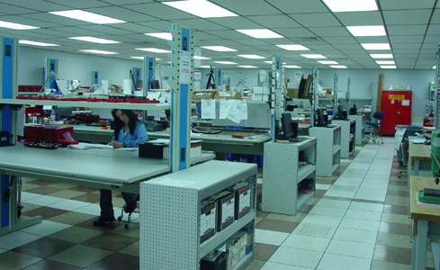

Legacy Manufacturing
RSI was founded on the manufacturing of high quality, reliable electronic components and systems. Our application and use
of technology has evolved, but our commitment to quality has stayed core. Legacy products include assemblies to repair and
maintain gun and missile fire control radar, submarine sonar, fathometers, signal data processors, tactical communication radios,
and identification friend or foe (IFF) radar sets. An RSI expertise is in short run, fast turnaround manufacturing and testing of
high reliability electronic assemblies.
To see a full A-Z list of products, click here.
RSI is ISO 9001-2008 Certified

The production area